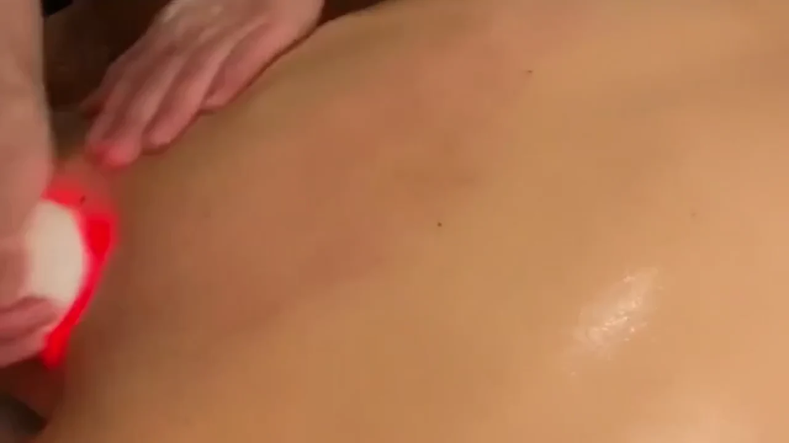
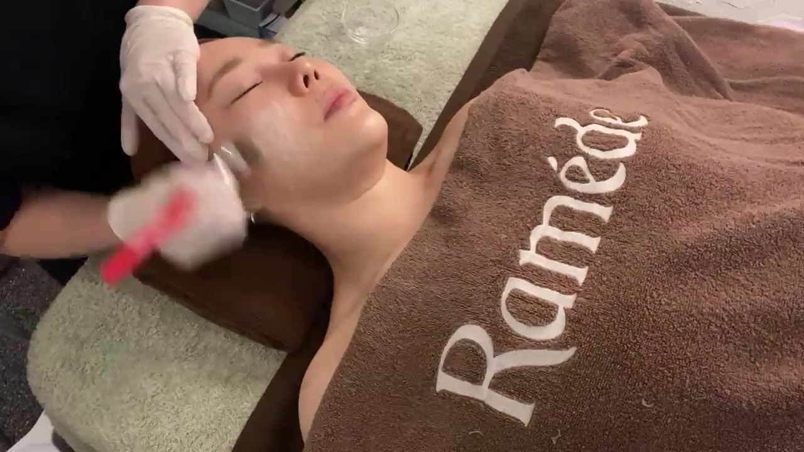
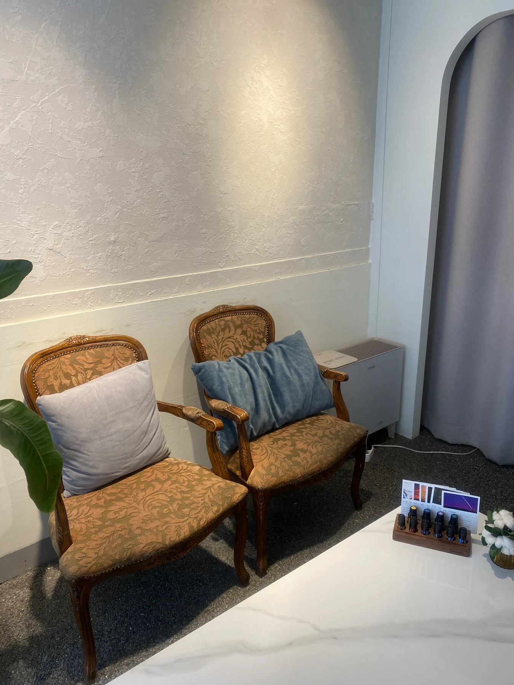

Body Care
전신 관리
에너지테라피·고주파·수기로 한 분에게 집중하는 전신 케어.
자세히 보기 ↗
에스테틱 운영 경험
누적 방문고객
1:1 맞춤 케어
RAMÈDE · CARE FOR ME
오늘의 컨디션에 맞춰,
나를 위한 관리.

01 / THE RAMÈDE WAY
같은 부위의 고민도 필요한 관리는 다를 수 있습니다.
한 분의 컨디션을 살피는 상담에서 시작합니다.
어깨와 등부터 하체까지.
원하는 부위와 관리 목적을 함께 확인합니다.
02 / THE RAMÈDE WAY
에너지테라피를 중심으로 고주파와 수기를 함께.
한 분에게 필요한 시간을 구성합니다.
관리 구성과 소요 시간을 먼저 안내하고,
관리 주기와 횟수도 함께 상담합니다.


 YUN JIHYEON / DIRECTOR
YUN JIHYEON / DIRECTORA NOTE FROM RAMÈDE
안녕하세요. 거제에서 라메드 에스테틱을 운영하는 윤지현입니다. 재방문과 소개로 이어져온 라메드는 편안한 상담과 꼼꼼한 디테일 케어를 소중히 생각합니다.
라메드에서 보내는 시간이 오롯이 자신을 돌보는 편안한 시간이 되도록, 충분히 이야기를 나누고 세심하게 살피겠습니다.
라메드 에스테틱 원장 윤지현
COMFORT, IN EVERY DETAIL
관리 도구의 위생을 세심하게 챙깁니다.
일회용 안면커버와 해면을 사용합니다.
관리 고객 수에 맞춰 매일 세탁합니다.
에너지테라피·고주파·수기로 한 분에게 집중하는 전신 케어.
자세히 보기 ↗
피부 고민에 따라 안내하는 40분 맞춤 관리.
자세히 보기 ↗두피부터 목과 견갑 부위까지 세심하게.
자세히 보기 ↗등·복부·하체, 원하는 부위에 조금 더 집중하는 시간.
자세히 보기 ↗CARE GUIDE
어깨와 등부터 하체까지. 에너지테라피와 고주파, 수기로 전신을 꼼꼼하게 살피는 라메드의 기본 전신 케어입니다.
수기 근막케어, 고주파, 에너지테라피에 전신 원적외선 기기관리를 더한 구성. 조금 더 여유롭게 나에게 집중하는 전신 코스입니다.
바디라인이 고민될 때. 후면의 어깨·등·허리·하체와 전면의 복부·허벅지·데콜테를 수기와 고주파·기기로 관리합니다.
스킨 리파인 — 색소·잡티·모공 고민
에너지 리프팅 리빌드 — 주름·탄력 고민
광채 리셋 — 미백·수분 고민
두피와 두근막을 중심으로 두피·모근 환경을 관리하고, 목과 견갑 부위까지 세심하게 살핍니다.
등·후면 및 목 / 상체 전·후면 및 복부 / 하체 전·후면 및 풋케어. 원하는 고민 부위에 따라 관리 비중을 조절합니다.
THE ART OF PERSONAL CARE
라메드의 실제 관리 순간을 만나보세요.

에너지테라피
관리 자세히 보기 ↗
등·어깨 고주파
관리 자세히 보기 ↗
다리 고주파
관리 자세히 보기 ↗
복부 고주파
관리 자세히 보기 ↗실제 관리 장면입니다. 관리 부위와 구성은 상담을 통해 안내합니다.
BEFORE YOUR VISIT
처음이라 궁금한 것들.
시그니처는 90분, 스페셜은 120분입니다. 스페셜은 전신 원적외선 기기관리가 포함되어 관리 시간에 차이가 있습니다. 자세한 구성은 상담 시 안내합니다.
처음에는 첫 체험 가격으로 전신 스페셜 케어를 추천드립니다. 다만 원하는 관리 부위와 컨디션을 먼저 듣고 적합한 구성을 함께 상담합니다.
처음 방문하시는 고객에게 1회 적용하며 리뷰 작성이 필수입니다. 전신 시그니처·스페셜·슬리밍·헤드스파에 적용됩니다. 부위별 맞춤케어와 스킨케어는 별도의 3회 구성입니다.
일반적으로 주 1회 간격을 안내하되, 컨디션과 관리 목적에 따라 달라집니다. 상담에서는 불편한 부위, 질환 여부, 운동·수면 습관, 스트레스와 부종 등 전반적인 컨디션을 확인합니다.
원하는 관리와 방문 일정을 알려주시면 가능한 시간을 상담 후 안내합니다. 카카오채널 또는 전화로 먼저 문의해주세요. 운영시간 조율도 상담 가능합니다.

GEOJE · RAMÈDE
YOUR OWN MOMENT
오늘의 컨디션과 원하는 관리를 이야기해주세요.
상담 · 예약 문의 ↗